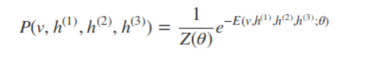

什么是受限玻尔兹曼机？
玻尔兹曼机是一大类的神经网络模型，但是在实际中运用的最多的还是RBM，RBM是一个随机神经网络（即当网络的神经元节点被激活时会有随机行为，随机取值）。它包含一层可视层和一层隐藏层，其中可视层的节点用v表示，隐藏层节点用h表示。在同一层的神经元之间是相互独立的，而在不同的网络层之间的神经元是相互连接的（双向连接）。在网络进行训练以及使用信息的时候会在两个方向进行流动，而且两个方向上的权值是相同的，但是偏置是不同的（偏置的个数与神经元的个数相同），其结构如图所示。
我们可以看到上面一层神经元组成Hidden Layer，一般用h表示隐藏层神经元的值。下面一层神经元组成visiable layer，一般用v表示可见层神经元的值。连接权值我们用矩阵W表示，和DNN不同的是，RBM是不区分前向和后向的，可见层的状态可以作用于隐藏层，而隐藏层的状态可以作用于可见层。隐藏层的偏置系数是向量b，可见层的偏置系数是向量a。常见的RBM一般是二值的，即不管是隐藏层还是可见层，它们的神经元的取值是0或者1.
RBM模型的结构：权重矩阵W，偏置系数a、b，隐藏神经元状态向量h和可见层神经元状态向量v
如RBM这类由玻尔兹曼机发展而来的图模型都是基于能量的概率分布模型，分为两个部分：一部分是能量函数，第二部分是基于能量函数的概率分布函数。对于给定的状态向量h和v，则RBM当前的能量函数可以表示为如下

其中a和b是偏置系数，W是权值矩阵，有了能量函数，v和h的联合概率分布为：
其中Z被称为配分函数的归一化常数（对于概率输出一般要做归一化）：
由于配分函数Z的难以处理，所以必须使用最大似然梯度来近似，首先从联合分布中导出条件分布：
为了推导方便将无关值归于Z’中
可以看到就是相当于使用了sigmoid函数，现在可以写出关于隐藏层的完全分布条件：
有了激活函数，我们就可以从可见层和参数推导出隐藏层的神经元取值概率了，对于0，1取值的情况，则大于0.5取1，从隐藏层和参数导出可见的神经元的取值方法也是一样的。
RBM的损失函数
RBM模型的关键就是求出我们模型中的参数W、a、b，首先我们得写出损失函数，RBM一般使用的是对数损失函数，即期望最小化：
然后对其求偏导：
虽然说梯度下降从理论上来说可以优化RBM模型，到那时实际中很难求得P(v)的概率分布的（P(v)表示可见层节点的联合概率）。计算复杂度非常大，因此采用一些随机采样的方法来得到近似的解。看这三个梯度的第二项实际上都是求期望，而我们知道，样本的均值是随机变量期望的无偏估计。因此一般都是基于对比散度方法来求解。
对比散度算法（CD-k算法）
深度受限玻尔兹曼机(DBM)
加深RBM的层数后，就变成了DBM：结构图如下：
此时的能量函数变为：
联合概率变为：

其实DBM也可以看作是一个RBM，对上图稍加变换就可以看作是一个RBM：
将可见层和偶数隐藏层放在一边，将奇数隐藏层放在另一边，我们就得到了RBM，和RBM的细微区别只是现在的RBM并不是全连接的，其实也可以看做部分权重为0的全连接RBM。RBM的算法思想可以在DBM上使用。只是此时我们的模型参数更加的多，而且迭代求解参数也更加复杂了。
以下是Hinton教授给出的RBM经典二值化的代码：
1 | from __future__ import print_function |